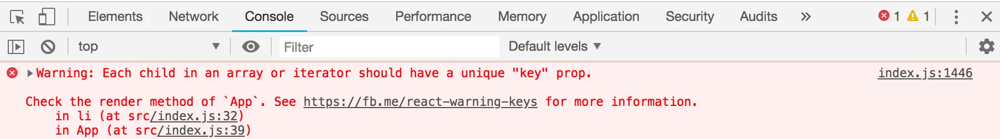
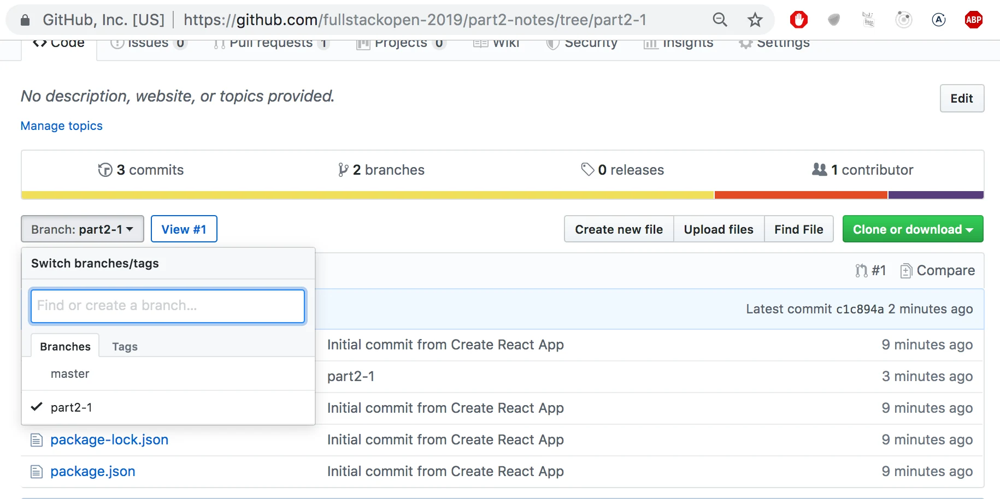
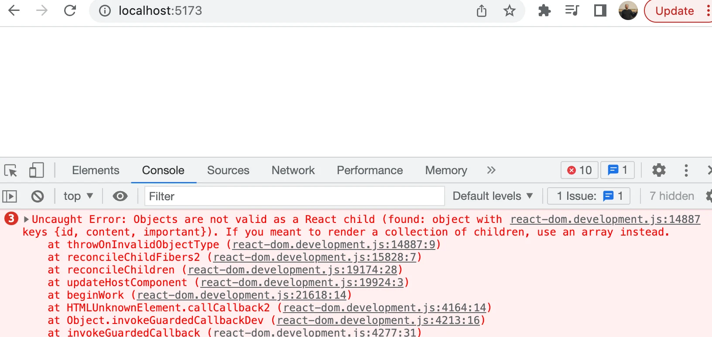
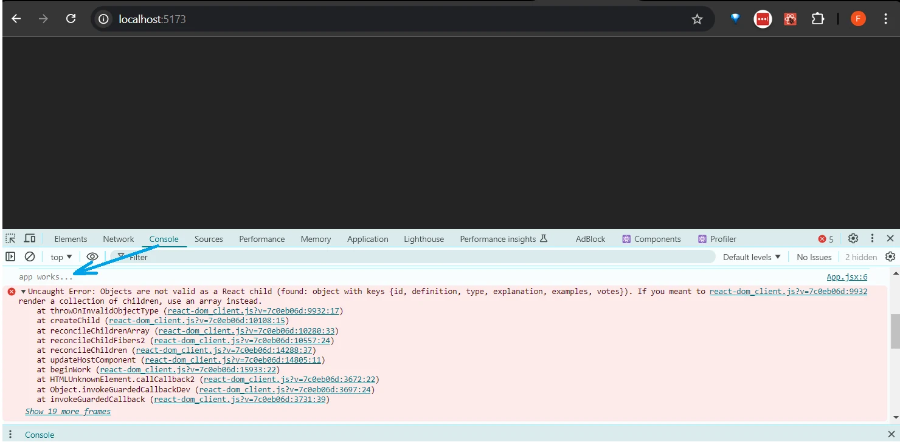
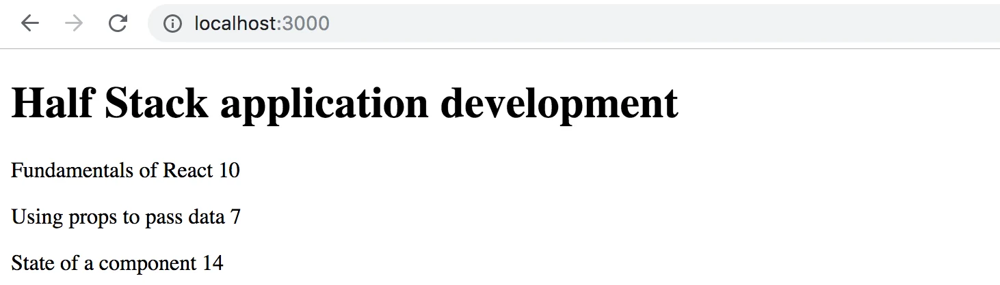
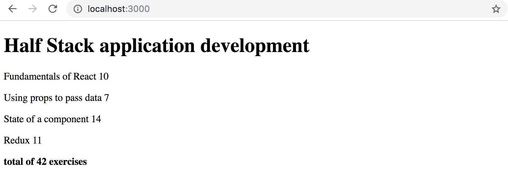
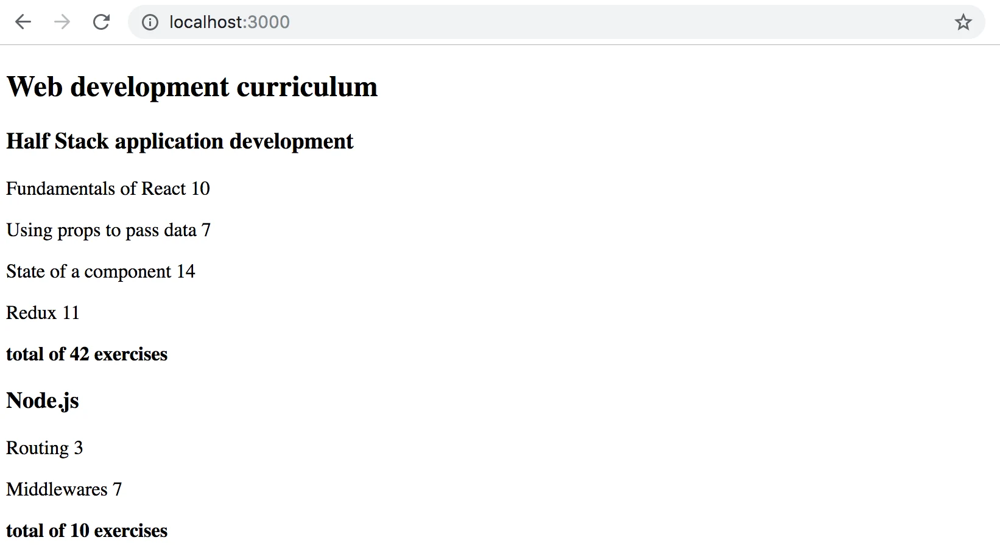

عرض القوائم والوحدات
قبل بدء جزء جديد، لنستعرض سريعاً بعض المواضيع التي ثبت أنها صعبة في العام الماضي.
console.log
ما الفرق بين مبرمج JavaScript خبير ومبرمج مبتدئ؟ الخبير يستخدم console.log أكثر منه بـ10 إلى 100 مرة.
ومن المفارقات أن هذا يبدو صحيحاً حتى مع أن المبرمج المبتدئ يحتاج إلى console.log (أو أي طريقة أخرى لتصحيح الأخطاء) أكثر من المبرمج الخبير.
عندما لا يعمل شيء ما، لا تكتفِ بالتخمين في سبب المشكلة. بل استخدم التسجيل أو أي طريقة أخرى لتصحيح الأخطاء.
ملاحظة كما شُرح في الجزء الأول، عندما تستخدم الأمر console.log لتصحيح الأخطاء، لا تدمج الأشياء «على طريقة Java» بعلامة الجمع. فبدلاً من كتابة:
console.log('props value is ' + props)
افصل بين الأشياء المراد طباعتها بفاصلة:
console.log('props value is', props)
إذا دمجت كائناً مع نص وسجّلته في وحدة التحكم (كما في مثالنا الأول)، فستكون النتيجة عديمة الفائدة تماماً:
props value is [object Object]
وعلى العكس، عندما تمرّر الكائنات كوسائط منفصلة تفصل بينها فواصل إلى console.log، كما في مثالنا الثاني أعلاه، يُطبع محتوى الكائن في وحدة تحكم المطوّر كنصوص مفيدة. وإذا لزم الأمر، اقرأ المزيد عن تصحيح أخطاء تطبيقات React.
نصيحة احترافية: مقتطفات Visual Studio Code
مع Visual Studio Code، من السهل إنشاء «مقتطفات» (snippets)، أي اختصارات لتوليد أجزاء الشيفرة الشائعة الاستخدام بسرعة، تماماً كما تعمل 'sout' في Netbeans.
تجد تعليمات إنشاء المقتطفات هنا.
كما تجد مقتطفات جاهزة ومفيدة كإضافات لـVS Code في متجر الإضافات.
أهم مقتطف هو مقتطف الأمر console.log()، مثل clog. ويمكن إنشاؤه هكذا:
{
"console.log": {
"prefix": "clog",
"body": [
"console.log('$1')",
],
"description": "Log output to console"
}
}
تصحيح شيفرتك باستخدام console.log() شائع إلى حد أن Visual Studio Code يضم هذا المقتطف مدمجاً. لاستخدامه، اكتب log واضغط Tab للإكمال التلقائي. وتجد إضافات مقتطفات console.log() الأكثر اكتمالاً في متجر الإضافات.
مصفوفات JavaScript
من الآن فصاعداً، سنستخدم باستمرار معاملات البرمجة الوظيفية في مصفوفات JavaScript، مثل find و_filter_ و_map_.
إذا كانت معالجة المصفوفات بالمعاملات الوظيفية تبدو غريبة عليك، فمن الجدير مشاهدة الأجزاء الثلاثة الأولى على الأقل من سلسلة فيديوهات يوتيوب البرمجة الوظيفية في JavaScript:
إعادة النظر في معالجات الأحداث
استناداً إلى دورة العام الماضي، ثبت أن التعامل مع الأحداث صعب.
من الجدير قراءة فصل المراجعة في نهاية الجزء السابق - إعادة النظر في معالجات الأحداث - إذا شعرت أن معرفتك بالموضوع تحتاج إلى بعض الصقل.
أثار تمرير معالجات الأحداث إلى المكوّنات الفرعية للمكوّن App بعض الأسئلة. وتجد مراجعة موجزة للموضوع هنا.
عرض المجموعات
الآن، سنبني الواجهة الأمامية، أو واجهة المستخدم (الجزء الذي يراه المستخدمون في متصفحهم)، باستخدام React، على غرار التطبيق المثال من الجزء 0.
لنبدأ بما يلي (الملف App.jsx):
const App = (props) => {
const { notes } = props
return (
<div>
<h1>Notes</h1>
<ul>
<li>{notes[0].content}</li>
<li>{notes[1].content}</li>
<li>{notes[2].content}</li>
</ul>
</div>
)
}
export default App
يبدو الملف main.jsx هكذا:
import ReactDOM from 'react-dom/client'
import App from './App'
const notes = [
{
id: 1,
content: 'HTML is easy',
important: true
},
{
id: 2,
content: 'Browser can execute only JavaScript',
important: false
},
{
id: 3,
content: 'GET and POST are the most important methods of HTTP protocol',
important: true
}
]
ReactDOM.createRoot(document.getElementById('root')).render(
<App notes={notes} />
)
تحتوي كل ملاحظة على محتواها النصي، وقيمة منطقية لتحديد ما إذا كانت الملاحظة قد صُنّفت مهمة أم لا، وكذلك id فريد.
يعمل المثال أعلاه لأن هناك ثلاث ملاحظات بالضبط في المصفوفة.
تُعرض الملاحظة الواحدة بالوصول إلى الكائنات في المصفوفة بالرجوع إلى رقم فهرس مكتوب مباشرة في الشيفرة:
<li>{notes[1].content}</li>
هذا ليس عملياً بالطبع. يمكننا تحسين ذلك بتوليد عناصر React من كائنات المصفوفة باستخدام الدالة map.
notes.map(note => <li>{note.content}</li>)
النتيجة مصفوفة من عناصر li.
[
<li>HTML is easy</li>,
<li>Browser can execute only JavaScript</li>,
<li>GET and POST are the most important methods of HTTP protocol</li>,
]
ويمكن بعد ذلك وضعها داخل وسوم ul:
const App = (props) => {
const { notes } = props
return (
<div>
<h1>Notes</h1>
// highlight-start
<ul>
{notes.map(note => <li>{note.content}</li>)}
</ul>
// highlight-end
</div>
)
}
ولأن الشيفرة التي تولّد وسوم li هي JavaScript، فيجب لفّها بأقواس معقوصة في قالب JSX تماماً مثل كل شيفرة JavaScript الأخرى.
سنجعل الشيفرة أيضاً أكثر وضوحاً بتقسيم تعريف الدالة السهمية على عدة أسطر:
const App = (props) => {
const { notes } = props
return (
<div>
<h1>Notes</h1>
<ul>
{notes.map(note =>
// highlight-start
<li>
{note.content}
</li>
// highlight-end
)}
</ul>
</div>
)
}
خاصية key
رغم أن التطبيق يبدو يعمل، يظهر تحذير مزعج في وحدة التحكم:

كما تشير صفحة React المرتبطة في رسالة الخطأ؛ يجب أن تكون لكل عناصر القائمة، أي العناصر التي تولّدها الدالة map، قيمة مفتاح فريدة: خاصية تسمى key.
لنضف المفاتيح:
const App = (props) => {
const { notes } = props
return (
<div>
<h1>Notes</h1>
<ul>
{notes.map(note =>
<li key={note.id}> // highlight-line
{note.content}
</li>
)}
</ul>
</div>
)
}
وتختفي رسالة الخطأ.
يستخدم React خصائص key للكائنات في المصفوفة لتحديد كيفية تحديث العرض الذي يولّده مكوّن عندما يُعاد عرض المكوّن. المزيد عن هذا في توثيق React.
Map
فهم كيفية عمل دالة المصفوفة map أمر بالغ الأهمية لبقية الدورة.
يحتوي التطبيق على مصفوفة تسمى notes:
const notes = [
{
id: 1,
content: 'HTML is easy',
important: true
},
{
id: 2,
content: 'Browser can execute only JavaScript',
important: false
},
{
id: 3,
content: 'GET and POST are the most important methods of HTTP protocol',
important: true
}
]
لنتوقف لحظة ونفحص كيف تعمل map.
إذا أُضيفت الشيفرة التالية، مثلاً، إلى نهاية الملف:
const result = notes.map(note => note.id)
console.log(result)
ستُطبع [1, 2, 3] في وحدة التحكم. تُنشئ map دائماً مصفوفة جديدة، وقد أُنشئت عناصرها من عناصر المصفوفة الأصلية عبر الربط: باستخدام الدالة المعطاة كوسيط إلى الدالة map.
والدالة هي
note => note.id
وهي دالة سهمية مكتوبة بالصيغة المختصرة. أما الصيغة الكاملة فتكون:
(note) => {
return note.id
}
تستقبل الدالة كائن note كوسيط وتعيد قيمة حقل id فيه.
وإذا غيّرنا الأمر إلى:
const result = notes.map(note => note.content)
فستحصل على مصفوفة تحتوي على محتويات الملاحظات.
هذا قريب جداً بالفعل من شيفرة React التي استخدمناها:
notes.map(note =>
<li key={note.id}>
{note.content}
</li>
)
وهي تولّد وسم li يحتوي على محتوى الملاحظة من كل كائن note.
ولأن معامل الدالة الممرَّر إلى الدالة map -
note => <li key={note.id}>{note.content}</li>
- يُستخدم لإنشاء عناصر العرض، فيجب عرض قيمة المتغير داخل أقواس معقوصة. جرّب أن ترى ماذا يحدث إذا أزلت الأقواس.
سيسبب استخدام الأقواس المعقوصة بعض المتاعب في البداية، لكنك ستعتاد عليها قريباً بما يكفي. فالتغذية البصرية الراجعة من React فورية.
نمط مضاد: فهارس المصفوفة كمفاتيح
كان يمكننا إخفاء رسالة الخطأ في وحدة التحكم باستخدام فهارس المصفوفة كمفاتيح. ويمكن الحصول على الفهارس بتمرير معامل ثانٍ إلى الدالة الراجعة الخاصة بالدالة map:
notes.map((note, i) => ...)
عند الاستدعاء بهذه الطريقة، تُسند إلى i قيمة فهرس الموضع الذي توجد فيه الملاحظة في المصفوفة.
وبذلك، إحدى طرق تعريف توليد الصفوف دون الحصول على أخطاء هي:
<ul>
{notes.map((note, i) =>
<li key={i}>
{note.content}
</li>
)}
</ul>
ومع ذلك، هذا غير موصى به وقد يخلق مشكلات غير مرغوبة حتى لو بدا أنه يعمل بشكل جيد تماماً.
اقرأ المزيد عن هذا في هذا المقال.
إعادة هيكلة الوحدات
لنرتب الشيفرة قليلاً. نحن مهتمون فقط بحقل notes في props، فلنستخرجه مباشرة باستخدام التفكيك:
const App = ({ notes }) => { //highlight-line
return (
<div>
<h1>Notes</h1>
<ul>
{notes.map(note =>
<li key={note.id}>
{note.content}
</li>
)}
</ul>
</div>
)
}
إذا نسيت ما معنى التفكيك وكيف يعمل، فراجع القسم الخاص بالتفكيك.
سنفصل عرض الملاحظة الواحدة إلى مكوّن خاص بها هو Note:
// highlight-start
const Note = ({ note }) => {
return (
<li>{note.content}</li>
)
}
// highlight-end
const App = ({ notes }) => {
return (
<div>
<h1>Notes</h1>
<ul>
// highlight-start
{notes.map(note =>
<Note key={note.id} note={note} />
)}
// highlight-end
</ul>
</div>
)
}
لاحظ أن خاصية key يجب الآن تعريفها للمكوّنات Note، وليس لوسوم li كما كان الحال سابقاً.
يمكن كتابة تطبيق React كاملاً في ملف واحد. ومع أن ذلك ليس عملياً بالطبع. فالممارسة الشائعة هي تعريف كل مكوّن في ملفه الخاص كـوحدة ES6.
كنا نستخدم الوحدات طوال الوقت. فالأسطر الأولى من الملف main.jsx:
import ReactDOM from "react-dom/client"
import App from "./App"
يستورد import وحدتين، ما يمكّنهما من الاستخدام في ذلك الملف. تُوضع الوحدة react-dom/client في المتغير ReactDOM، وتُوضع الوحدة التي تعرّف المكوّن الرئيسي للتطبيق في المتغير App
لننقل مكوّن Note إلى وحدته الخاصة.
في التطبيقات الأصغر، تُوضع المكوّنات عادةً في مجلد يسمى components داخل مجلد src. والعُرف أن يُسمى الملف على اسم المكوّن. وقد تكون البنية الممكنة لمجلدات مشروع يحتوي عدة مكوّنات كما يلي:
src/
├── main.jsx
├── App.jsx
└── components/ # مجلد للمكوّنات القابلة لإعادة الاستخدام
├── Footer.jsx # ملف مسمّى على اسم المكوّن
├── Note.jsx
└── Notification.jsx
الآن، سننشئ مجلداً يسمى components لتطبيقنا ونضع بداخله ملفاً اسمه Note.jsx. ومحتويات الملف كما يلي:
const Note = ({ note }) => {
return <li>{note.content}</li>
}
export default Note
يُصدّر exports السطرُ الأخير من الوحدة المكوّنَ المعرَّف، أي المتغير Note.
الآن يمكن للملف الذي يستخدم المكوّن - App.jsx - أن يستورد الوحدة:
import Note from './components/Note' // highlight-line
const App = ({ notes }) => {
// ...
}
أصبح المكوّن الذي تُصدّره الوحدة متاحاً الآن للاستخدام عبر المتغير Note، كما كان في السابق.
لاحظ أنه عند استيراد مكوّناتنا الخاصة، يجب إعطاء موقعها بالنسبة إلى الملف المستورِد:
'./components/Note'
النقطة - . - في البداية تشير إلى المجلد الحالي، فموقع الوحدة هو ملف يسمى Note.jsx في المجلد الفرعي components داخل المجلد الحالي. ويمكن حذف امتداد اسم الملف .jsx.
للوحدات استخدامات أخرى كثيرة غير تمكين فصل تعريفات المكوّنات في ملفاتها الخاصة. وسنعود إليها لاحقاً في هذه الدورة.
يمكن العثور على الشيفرة الحالية للتطبيق على GitHub.
لاحظ أن الفرع main في المستودع يحتوي على شيفرة نسخة لاحقة من التطبيق. أما الشيفرة الحالية فهي في الفرع part2-1:

إذا استنسخت المشروع، فنفّذ الأمر npm install قبل تشغيل التطبيق بـ_npm run dev_.
عندما يتعطل التطبيق
في بداية مسيرتك البرمجية (وحتى بعد 30 عاماً من البرمجة مثلي أنا)، ما يحدث غالباً هو أن التطبيق يتعطل تماماً فحسب. ويزداد الأمر سوءاً مع اللغات ذات الأنماط الديناميكية، مثل JavaScript، حيث لا يتحقق المترجم من نوع البيانات. مثل متغيرات الدوال أو القيم المعادة.
يمكن أن يبدو «انفجار React»، مثلاً، هكذا:

في هذه المواقف، أفضل مخرج لك هو الأمر console.log.
جزء الشيفرة المسبب للانفجار هو هذا:
const Course = ({ course }) => (
<div>
<Header course={course} />
</div>
)
const App = () => {
const course = {
// ...
}
return (
<div>
<Course course={course} />
</div>
)
}
سنقترب من سبب التعطل بإضافة أوامر console.log إلى الشيفرة. ولأن أول ما يُعرض هو المكوّن App، فمن الجدير وضع أول console.log هناك:
const App = () => {
const course = {
// ...
}
console.log('App works...') // highlight-line
return (
// ..
)
}
لرؤية الطباعة في وحدة التحكم، علينا التمرير للأعلى فوق جدار الأخطاء الأحمر الطويل.

عندما يتبين أن شيئاً ما يعمل، يحين وقت التسجيل أعمق. وإذا كان المكوّن معرَّفاً كعبارة واحدة أو دالة بلا return، فإن ذلك يجعل الطباعة في وحدة التحكم أصعب.
const Course = ({ course }) => (
<div>
<Header course={course} />
</div>
)
يجب تغيير المكوّن إلى صيغته الأطول لنتمكن من إضافة الطباعة:
const Course = ({ course }) => {
console.log(course) // highlight-line
return (
<div>
<Header course={course} />
</div>
)
}
غالباً ما يكون جذر المشكلة أن props متوقعة أن تكون من نوع مختلف، أو تُستدعى باسم مختلف عن اسمها الفعلي، فيفشل التفكيك نتيجة لذلك. وكثيراً ما تبدأ المشكلة بحل نفسها عند إزالة التفكيك ورؤية ما تحتويه props.
const Course = (props) => { // highlight-line
console.log(props) // highlight-line
const { course } = props
return (
<div>
<Header course={course} />
</div>
)
}
إذا لم تُحل المشكلة بعد، فللأسف لا يوجد الكثير لفعله سوى مواصلة البحث عن الأخطاء بنثر المزيد من عبارات console.log في أنحاء شيفرتك.
أضفت هذا الفصل إلى المادة بعد أن انفجرت الإجابة النموذجية للسؤال التالي تماماً (بسبب كون props من نوع خاطئ)، واضطررت إلى تصحيح أخطائها باستخدام console.log.
قسم مطوّر الويب
قبل التمارين، دعني أذكّرك بما وعدت به في نهاية الجزء السابق.
البرمجة صعبة، ولهذا سأستخدم كل الوسائل الممكنة لتسهيلها
- سأبقي وحدة تحكم مطوّر المتصفح مفتوحة طوال الوقت
- سأتقدم بخطوات صغيرة
- سأكتب الكثير من عبارات console.log للتأكد من فهمي لكيفية تصرف الشيفرة وللمساعدة في تحديد المشكلات
- إذا لم تعمل شيفرتي، لن أكتب المزيد من الشيفرة. بل سأبدأ بحذف الشيفرة حتى تعمل أو أعود إلى حالة كان فيها كل شيء يعمل
- عندما أطلب المساعدة في قناة Discord الخاصة بالدورة أو في مكان آخر، سأصوغ أسئلتي بشكل صحيح، انظر هنا لكيفية طلب المساعدة
تمارين 2.1.-2.5.
تُسلَّم التمارين عبر GitHub، وبتعليم التمارين كمنجزة في نظام التسليم.
يمكنك تسليم كل التمارين في المستودع نفسه، أو استخدام عدة مستودعات مختلفة. وإذا سلّمت تمارين من أجزاء مختلفة في المستودع نفسه، فسمِّ مجلداتك تسمية جيدة.
تُسلَّم التمارين جزءاً واحداً في كل مرة. وعند تسليم تمارين جزء ما، لن تتمكن بعد ذلك من تسليم أي تمارين فائتة لذلك الجزء.
لاحظ أن هذا الجزء يحتوي تمارين أكثر من الأجزاء السابقة، لذا لا تسلّم حتى تنجز كل التمارين من هذا الجزء التي تريد تسليمها.
2.1: معلومات الدورة الخطوة 6
لنُكمل شيفرة عرض محتويات الدورة من التمارين 1.1 - 1.5. يمكنك البدء من شيفرة الإجابات النموذجية. ويمكن العثور على الإجابات النموذجية للجزء 1 بالذهاب إلى نظام التسليم، والنقر على my submissions في الأعلى، وفي الصف المقابل للجزء 1 تحت عمود solutions النقر على show. لرؤية حل تمرين course info، انقر على App.jsx تحت courseinfo.
لاحظ أنه إذا نسخت مشروعاً من مكان إلى آخر، فقد تحتاج إلى حذف مجلد node_modules وتثبيت الاعتماديات مرة أخرى بالأمر npm install قبل أن تتمكن من تشغيل التطبيق.
بشكل عام، لا يُوصى بنسخ محتويات مشروع كاملة و/أو إضافة مجلد node_modules إلى نظام التحكم بالإصدارات.
لنغيّر المكوّن App كما يلي:
const App = () => {
const course = {
id: 1,
name: 'Half Stack application development',
parts: [
{
name: 'Fundamentals of React',
exercises: 10,
id: 1
},
{
name: 'Using props to pass data',
exercises: 7,
id: 2
},
{
name: 'State of a component',
exercises: 14,
id: 3
}
]
}
return <Course course={course} />
}
export default App
عرّف مكوّناً مسؤولاً عن تنسيق دورة واحدة يسمى Course.
يمكن أن تكون بنية مكوّنات التطبيق، مثلاً، كما يلي:
App
Course
Header
Content
Part
Part
...
وبذلك يحتوي المكوّن Course على المكوّنات المعرَّفة في الجزء السابق، وهي مسؤولة عن عرض اسم الدورة وأجزائها.
يمكن أن تبدو الصفحة المعروضة، مثلاً، كما يلي:

لا تحتاج إلى مجموع التمارين بعد.
يجب أن يعمل التطبيق بغض النظر عن عدد أجزاء الدورة، لذا تأكد من أن التطبيق يعمل إذا أضفت أو حذفت أجزاء من دورة.
تأكد من أن وحدة التحكم لا تُظهر أي أخطاء!
2.2: معلومات الدورة الخطوة 7
اعرض أيضاً مجموع تمارين الدورة.

2.3*: معلومات الدورة الخطوة 8
إذا لم تكن قد فعلت ذلك بعد، فاحسب مجموع التمارين بدالة المصفوفة reduce.
نصيحة احترافية: عندما تبدو شيفرتك كما يلي:
const total =
parts.reduce((s, p) => someMagicHere)
ولا تعمل، فمن الجدير استخدام console.log، وهو ما يتطلب كتابة الدالة السهمية بصيغتها الأطول:
const total = parts.reduce((s, p) => {
console.log('what is happening', s, p)
return someMagicHere
})
لا تعمل؟ : استخدم محرك البحث للبحث عن كيفية استخدام reduce مع مصفوفة كائنات.
2.4: معلومات الدورة الخطوة 9
لنوسّع تطبيقنا ليسمح بـعدد اعتباطي من الدورات:
const App = () => {
const courses = [
{
name: 'Half Stack application development',
id: 1,
parts: [
{
name: 'Fundamentals of React',
exercises: 10,
id: 1
},
{
name: 'Using props to pass data',
exercises: 7,
id: 2
},
{
name: 'State of a component',
exercises: 14,
id: 3
},
{
name: 'Redux',
exercises: 11,
id: 4
}
]
},
{
name: 'Node.js',
id: 2,
parts: [
{
name: 'Routing',
exercises: 3,
id: 1
},
{
name: 'Middlewares',
exercises: 7,
id: 2
}
]
}
]
return (
<div>
// ...
</div>
)
}
يمكن أن يبدو التطبيق، مثلاً، هكذا:

2.5: وحدة منفصلة الخطوة 10
عرّف المكوّن Course كوحدة منفصلة يستوردها المكوّن App. ويمكنك تضمين كل المكوّنات الفرعية للدورة في الوحدة نفسها.